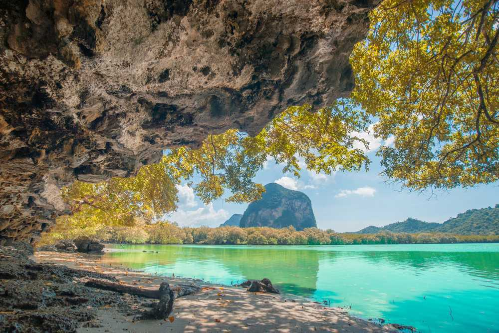

SAY YES
TO YOUR
NEXT VACATION!

Railey Beach
Railay Beach delivers on promises of white sand, turquoise-blue water, and the feeling that you've found a slice of paradise even before your feet touch the sand. The island can be reached by boat from Krabi town and Ao Nang-and the trip on a long-tail traditional boat is just as magical as what you'll encounter when you reach the shores.

Bangkok
Bangkok A city that never sleeps, Bangkok, the capital of Thailand is a modern-day melting pot of contrasting cultures and faiths. Here, towering skyscrapers stand in harmony next to temples and monasteries.
Trang